Workbooks Worksheets Columns
Worksheets-Columns
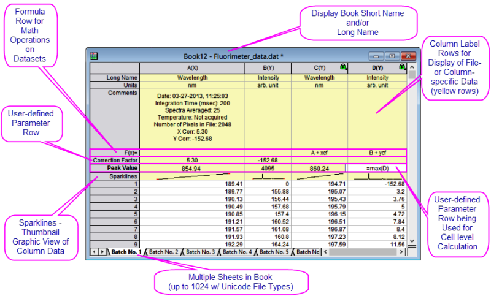
Workbook, Worksheet and Column Basics
The Origin workbook is a nameable, moveable, sizeable window that provides a framework for importing, organizing, analyzing, transforming, plotting and presenting your data. Limitations, Workbooks
- Each workbook is a collection of one or more worksheets (up to 1024).
- Each worksheet contains a collection of columns (up to 65,500) and each column contains rows of cells (up to 90,000,000).
- Each column has a Short Name (e.g. "A") that uniquely identifies it within the worksheet and a Column Designation (e.g. "(X)" which determines how it is handled, by default, in plotting and analysis operations.
- Each worksheet, and each worksheet column, has data-containing cells identified by row (index) number; and a preceding metadata containing area ("header") comprised of optional label rows, including Long Name, Units, Comments, etc.
 |
Two convenient buttons were recently added to the workbook window: Add Sheet and Show/Hide Organizer.
-

|
Some Workbook, Worksheet and Column Limits
Limitations, Workbook
| Object |
Maximum Number |
|
Worksheets in a workbook
Rows in a worksheet, 1 column
Rows in a worksheet, 5 columns
Rows in a worksheet, 32 columns
Columns in a worksheet, 1 row
Columns in a worksheet, 100 rows
Columns in a worksheet, 1000 rows
|
1024†
90,000,000
90,000,000
90,000,000
65,500
65,500
65,500
|
† > 255 sheets requires saving file to Unicode-compliant (e.g. *.opju) file format. Unicode formats not compatible with Origin versions prior to Origin 2018.
Naming Workbooks, Worksheets and Columns
Workbooks, Naming Naming Workbooks Worksheets, Naming Naming Worksheets Columns, Naming Naming Columns
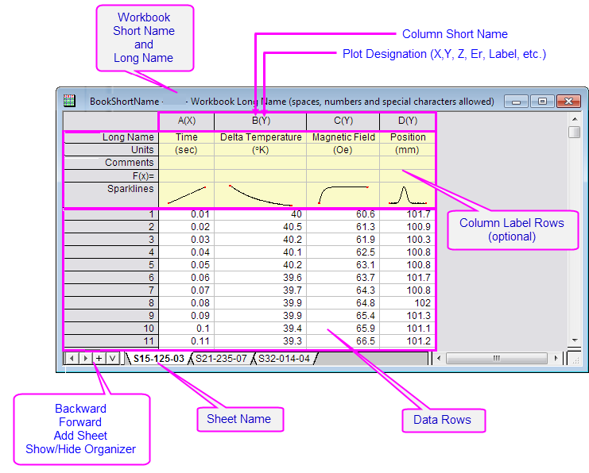
| Workbooks |
- A Workbook has a Short Name and an optional Long Name and Comments. Origin uses the Short Name for internal operations.
- Short Name must be unique within the project file, can contain only alpha-numeric characters (letters and numbers), must begin with a letter and are limited to 13 characters.
- A Workbook Long Name is optional, need not be unique within the project file, can use any characters in any order and has a limit of 5,506 characters (including spaces).
- To name a workbook, right-click on the window title bar and choose Properties. Here you can edit Long name, Short name and Comments. Use the Window Title drop-down to control which name(s) show on the window title bar.
|
| Worksheets |
- A Worksheet has a Name and optional Label and Comments.
- The Name must be unique within a workbook.
- A Worksheet Name has a 64 character limit, including spaces. These special characters are not allowed: {}|"<>()![].
- Worksheet Label and Comment are optional. They need not be unique within the project file, can use any characters in any order, and can be of any practical length.
- To name a worksheet, double-click on the sheet tab, or right-click on the tab and choose Name and Comments. More details are listed under Worksheets, below.
|
| Columns |
- A Column has a Short Name and an optional Long Name.
- The Short Name must be unique within the worksheet. When spreadsheet cell notation is enabled (default setting), you cannot edit the column Short Name (see Column Short Name Restriction). When cell notation is disabled, you can edit the column Short Name. When editing Short Names note that they must use only alphanumeric characters (no special characters), must begin with a letter or number, and cannot exceed 18 characters.
- A Column Long Name is optional, need not be unique within the project file, can use any characters in any order and has a limit of 30,000 characters. The Long Name can be edited directly by clicking in the Long Name cell or by right-clicking on the column header and choosing Properties from the shortcut menu.
- Dialog box and Status Bar references to data range will use Long Names, provided that (1) Long Name exists and (2) you have selected Use Long Names when available (Preferences: Options: Miscellaneous). Otherwise, Short Names are used.
|
Workbooks
Origin workbooks are highly customizable and can be saved with data (e.g. Workbook File) or without data (e.g. Workbook Template). Since they can be configured for many different applications, there is a good chance that you will collect a number of custom files over time. The New Book dialog is useful for organizing and choosing these files for use.
New Book and Book Templates
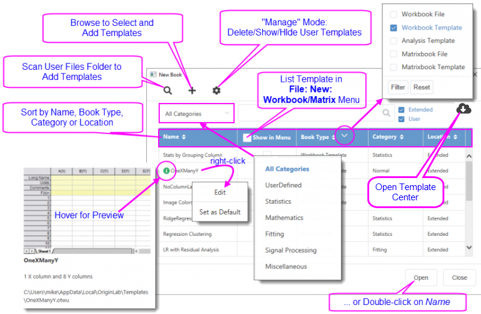
To add a empty new Workbook
- Click the New Workbook button
 on the Standard toolbar.
on the Standard toolbar.
or
- Select File: New: Workbook: Black Workbook menu.
To open the New Book dialog
- Click File: New: Workbook: Browse or press Ctrl + N.
|
An Open Template Center button  was recently added to the New Book dialog. Click the button to browse for additional workbook templates that you can download and add to your template list. was recently added to the New Book dialog. Click the button to browse for additional workbook templates that you can download and add to your template list.
|
- The dialog lists both add-on (Extended) and User-defined (User) files.
- Files can be sorted by Name, Book Type, Category or Location.
- A file preview shows when you hover on the
 icon.
icon.
- Right-click on a template name and Edit metadata or Set as Default (e.g. New Workbook button ). Also, right-click to Clear Default.
- Enable Show in Menu to list a window in the New: Workbook or New: Matrix menus.
- Filter windows by category using the "All Categories" menu.
- Filter windows by type using the Book Type drop-down menu. Reset to show all.
- Right-click on a template to Set as Default or Edit metadata.
- Enable/disable Show on startup and new project.
|
Each window's Properties dialog has a Comments box for entering text. These comments are included in the New Book dialog previews and the Project Explorer previews. In addition, comments are searchable from the Edit: Find in Project tool.
|
Spreadsheet Cell Notation (SCN)
Origin workbooks support Spreadsheet Cell Notation (SCN). Spreadsheet Cell Notation allows the sort of cell-level calculations that are familiar to users of spreadsheets (more details below).
- By default, SCN is ON for all new workbooks.
- In Origin 2017 - 2019, when SCN was enabled in the workbook, you saw this icon
 in the upper-left corner of the worksheet.
in the upper-left corner of the worksheet.
- Beginning with Origin 2019b, the SCN icon is hidden (by default) but SCN remains enabled (also by default) to make room on the workbook window for the Data Connector icon.
- Most users will want to leave SCN enabled but in rare cases (e.g. you need to customize the column Short Name), you may want to turn SCN off. To disable SCN, right-click on the workbook title bar and choose Properties. Look for the Spreadsheet Cell Notation check box about half-way down the page.
- When SCN is turned off, users of all versions will see this icon
 in the upper-left corner of the workbook.
in the upper-left corner of the workbook.
- If you open a project or workbook window in Origin and SCN is turned OFF in a particular workbook, the SCN OFF button will display in the upper-left corner. This includes projects or workbooks that were created prior to Origin 2017. To enable SCN, right-click on the book title bar, choose Properties and check the Spreadsheet Cell Notation check box.
What Types of Data Can I Store in the Workbook?
The workbook serves as a flexible container for all of your work-related data -- not just text and numeric data. You can add graphs, matrices, images, notes; and store calculations, scripts and variables, text objects and programmable buttons, and create live links to other project data. Beyond its role as a flexible data container, the workbook can also serve as a medium for batch analysis and reporting.
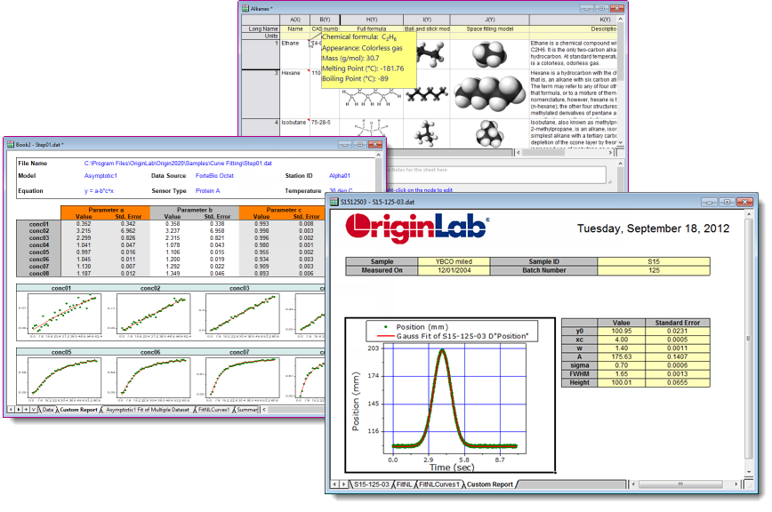
This table summarizes the kinds of objects that can be saved in the workbook window at the workbook, worksheet and worksheet cell levels, and how to access them.
Worksheets
A workbook can have up to 1,024 sheets. A sheet has a single Name which can contain spaces and special characters. Optionally, you can add a Label and/or a Comment.
- Double-click on the sheet tab and enter a Name. Alternately, right-click on the sheet tab, choose Name and Comments and edit the Name field.
System variable @SSL can be used to modify sheet naming behavior. Look for @SSL in the LabTalk System Variable List.
|
When mousing over the worksheet tab, Name, Label and Comments appear as a tooltip.
|
- Insert. Inserts a single worksheet ahead of the active sheet.
- Add. Appends a single worksheet.
- Duplicate Without Data. Duplicates the active worksheet without duplicating the data.
- Duplicate. Duplicates the active sheet, including the data.
Each sheet in a workbook can have its own set of customizations. When you Insert or Add a worksheet, the new sheet is based on the ORIGIN.otwu file (specifically the version of ORIGIN.otwu that is saved to your User Files Folder if you have customized this file). To add a sheet that is based on another sheet in the workbook (including number of columns and special formatting), you would use the Duplicate or Duplicate Without Data shortcut command.
You can also (a) drag existing sheets between books or (b) drag and drop sheets onto an empty portion of the workspace, to create a new book.

To select multiple sheets when dragging between books or when dropping sheets onto the workspace to create new books:
- Press Shift/Ctrl on multiple worksheet tabs, then drag selected tabs to another window or an empty portion of the workspace.
or...
- Right-click on a worksheet tab, and choose Navigate. In the Navigate Worksheets dialog, Ctrl/Shift + select sheets, then right-click and choose Move to, then New Book or Selected Book.
Worksheet Properties
- Right-click in the gray area to the right of the worksheet grid (but inside the workbook window) and choose Properties.
You can use the Worksheet Properties dialog box to customize properties of the sheet, including...
- Display of row labels, header labels and grid lines (View tab).
- The number or rows and columns and other sheet dimensions such as column or row header height (Size tab).
- Enabling of rich text, text wrap, how to display truncated cell content, sheet font and color (Format tab).
- Auto add rows, ignore hidden rows in plotting and analysis, cell resizing (Miscellaneous tab).
- Printing/exporting of grid lines, headers and footers, background color (Print/Export tab).
- Script to run after import or upon data change (Script tab).
- Display and edit a user tree (e.g. the user adds some configuration info for use in the template) (User Tree tab).
Note that many of the sheet customizations can be applied at the cell level by right-clicking on a selected cell and choosing Format Cells.
For more information, see The Worksheet Properties dialog box.
Manipulating Sheets with Object Manager
Use the Object Manager's shortcut menu commands to manipulate display of workbook content:
- List all sheets in the active workbook.
- Click a sheet in Object Manager to activate the corresponding sheet in the workbook.
- Right-click in Object Manager for access to common worksheet operations, including Delete, Insert, Add, Move, Copy, and Rename.

Hide/Show Sheets
You can hide (and show) worksheets by using the Object Manager.
- In the Object Manager, select one or more worksheets.
- Right-click and choose Hide. Hidden sheets are dimmed in Object Manager and hidden in the workbook.
- To show the sheet(s), right-click on the dimmed sheets and choose Show.
-
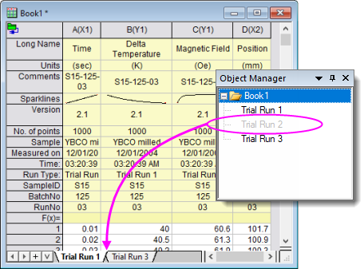
- Note that you can also right-click on one or more worksheet tabs and choose Hide/Show.
- Additionally, there is a Navigate shortcut menu item, available in both sheet-tab and Object Manager shortcut menus, that opens the Navigate Worksheets dialog. You can hide or show sheets by clearing or checking the Show check boxes in this dialog.
- Another way to show sheets is via the Workbook Organizer:
- Right-click in the gray area to the right of the last worksheet column and choose Show Organizer.
- In the lower left panel, hidden sheets will be dimmed (grayed-out). Double-click on the dimmed sheet to Show.
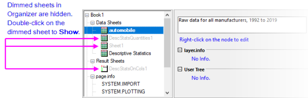
Worksheet Views: Split and Freeze
Origin has two utilities for locking the view in part of the worksheet, while allowing you to scroll through the remainder of the sheet. The two could be used interchangeably in some situations.
Splitting the worksheet into panels using dividers
This places a moveable, vertical or horizontal divider at the selected row or column; or if a single cell is selected, both a vertical and a horizontal divider. This divides the worksheet into identical and scrollable views of the worksheet data area. The user is able to scroll within each panel while rows or columns in the other panel(s) remain visible.
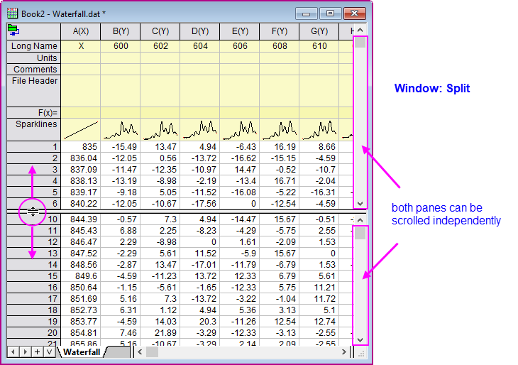
- Select a worksheet row/column or a single cell and choose Window: Split.
- To remove the split choose Window: Remove Split.
Freeze rows or columns in the worksheet
The user can freeze the first 1 to 10 rows and/or columns in the worksheet, thus locking them in view while the remainder of the rows or columns remain scrollable. Locked row and column headers are shaded in a darker color to indicate freeze.
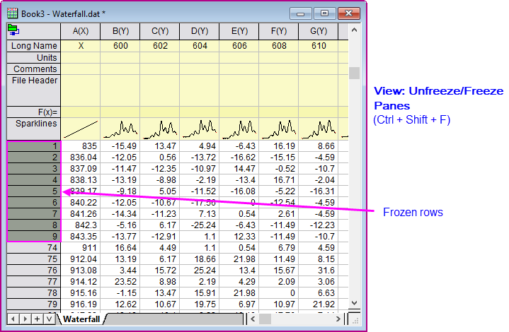
- Highlight a row or column, or a single cell between index row/column = 1 and 10, then do one of the following:
-
- Choose View: Freeze/Unfreeze Panes.
- Press Ctrl + Shift + F.
- Select a row/column or a single cell and click the Mini Toolbar button Freeze Panes.
- Click in upperleft-most cell in the sheet and click the Unfreeze Panes button.
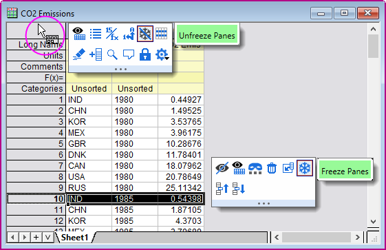
Worksheet Columns
- To add a new column to the right end of an existing worksheet, right-click in the gray area to the right of the worksheet columns and choose Add New Column or Click the Add New Column button
 on the Standard toolbar.
on the Standard toolbar.
- To add multiple columns to the worksheet, make the worksheet active then choose Column: Add New Columns... from the main menu. Specify the number of columns to add in the Add New Columns dialog box and click OK; or use the Format: Worksheet... menu item or the F4 hot key to open the Worksheet Properties dialog, then set the desired value for Column Number in the Size tab.
- To insert a column into the worksheet, highlight a column, then right-click and choose Insert. A column is inserted ahead of the selected column and column Short Names are adjusted accordingly.
Worksheet columns can be renamed by:
- Double-clicking on the column heading opens the Column Properties dialog box. Enter/edit Short Name and/or Long Name.
- Type a Long Name directly into the worksheet header cell by double-clicking in the cell.
- Import a data file and specify that the workbooks, worksheets, and columns be named upon import.
- Use the Enumerate Labels tab of the Worksheet Properties dialog to enumerate or duplicate column names and labels.
- Type names into a few columns (e.g. Peak 1 and Peak 2), then highlight the cells and drag the bottom-right corner of the selection to auto fill and enumerate the names for other columns. This also works for other column label rows such as Comments.
See the above table for rules on worksheet column naming.
Column Designations
As mentioned, worksheet Column Designations (aka "Plot Designations") generally determine how data are handled during analysis and plotting operations. For instance, you might select an X column + three Y columns to perform a simultaneous linear fitting of each Y dataset against a common set of X values. Or you might select the same columns to graph 3 line plots against a common set of X values. In addition, there are designations for Z values, for error data, for labels, etc. (for more information, see Setting Column Designation in the Origin Help file).

While there are a number of places in the user-interface where you can designate columns during some analysis or plotting operation, at a basic level, they are set in the worksheet by (1) clicking on the column header to select a column, then (2) doing one of the following:
- Choose an option from the column-level Mini Toolbar.
- Click a button on the Column toolbar.
- Right-click on the column and choose Set As and choose an option from the shortcut menu.
- Right-click on the column, choose Properties and set Plot Designation.
The Column Properties Dialog Box
Worksheet Column Properties The Column Properties dialog box is used to customize properties of the column including...
- Double-click on the column header.
- Right-click the selected column(s) and choose Properties....
Use the Properties tab to edit the column Short Name, if desired. Other properties -- Long Name, Units and Comments -- can be edited here or entered directly into the column label row cells.
Formatting Column Data
Data in the Origin worksheet is treated as either text or numeric data. While the display of text data in the worksheet is fairly straightforward, the display of numeric data is more complicated.
Unless otherwise specified, all numbers in the worksheet are stored internally as floating point, double precision (Double(8)) numbers. This includes date and time, data which is formatted to display in degrees-minutes-seconds or numbers that are formatted to display a fixed number of decimal digits.
When dealing with numeric data, understand that what you see in the worksheet is a representation of a number that is stored internally. This is important for two reasons:
- Calculations involving worksheet values are always done on the double-precision number that is stored internally, not the value that is displayed in the worksheet.
- You can apply various Format and Display options to change the way that this stored number displays in the worksheet.
|
While the central place for formatting worksheet data is the Properties dialog, as described above, keep in mind that there are quick-access Mini Toolbar buttons for changing the Display of numeric and date-time data. Note that the Format of selected columns must first be set as Date or Numeric/Text & Numeric for these buttons to be visible.
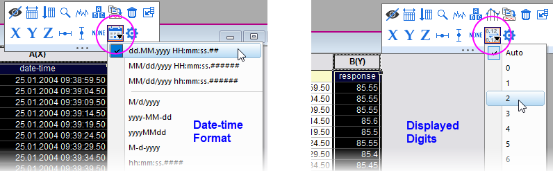
|
Numeric Display Formats
- Double-click on a column heading to open the Column Properties dialog.
- Click the Properties tab, then set Format = Numeric.
- Set Display to Decimal: 1000, Scientific: 1E3, Engineering: 1K, Decimal: 1,000 or Custom (see below).
Date and Time Formats
By default, Origin stores date-time data as a modified Julian Day value and it uses this number for date-time calculations. Typically, however, you will prefer to display this Julian Day value in a more meaningful date-time format:
- Double-click on a column heading to open the Column Properties dialog.
- Click the Properties tab, then set Format = Time, Date, Month or Day of Week.
- Set the Display list to one of the listed options.
- If none of the listed options are appropriate you can choose Custom Display and construct your own custom date-time string using these date-time format specifiers.
|
When importing date-time data into the worksheet, Origin will sometimes treat this data as text (Origin's CSV Connector generally does a better job of recognizing date-time data). If your date-time data are left-aligned in the worksheet cell, Origin "sees" it as text. You will need to open the Column Properties dialog box and choose your Format and Display options. When you see that your date-time data are right-aligned in the cell, you know that Origin "sees" the data as numeric data, displaying in a date-time format.
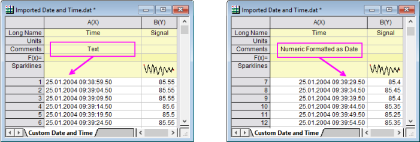
|
Color Format
Origin 2021 introduced a new column and cell Format -- Color.
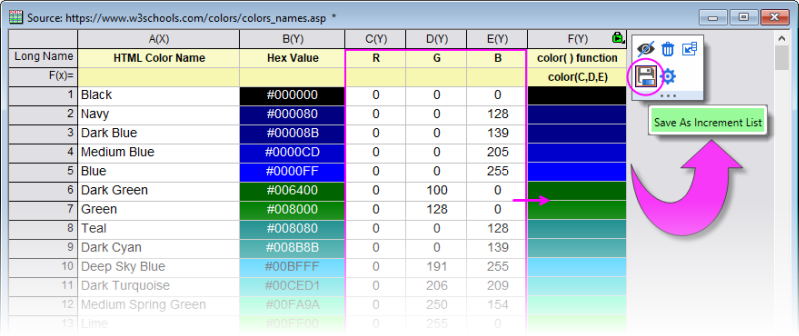
- Supports direct entry of HTML color codes into the worksheet cell to set cell background color, with the option to display or hide the HTML codes in the Color cell.
- Use the color() function to calculate hex values and set colors from RGB values in other data columns using Set Column Values or cell formula (e.g.
color(A,B,C) sets color using RGB values in columns A, B and C).
- Select a column in which Format = Color and use a Mini Toolbar button to Save as Increment List (color list) for use in your graphs.
- Alternately, from the Custom colors menu in the Color Chooser, choose Create Color List from Column and pick a Color worksheet column from the flyout.
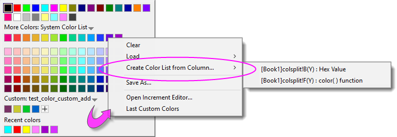
Other Custom Display Formats
Origin can display numeric values in the worksheet in a variety of custom formats. This illustration shows various formats applied to the same set of numeric values (column A(X)).

The following is a sample listing of some supported custom format options (this just happens to be the pre-populated list that ships with Origin 2019). Note that you can enter custom formats directly into the Custom Display list and they will be saved to this list.
There are many other format options. For more information, see Custom Numeric Formats
| Format |
Description |
Example
if cell value = 123.456 |
| *n |
Display n significant digits. |
*3 displays 123 |
| .n |
Display n decimal places. |
.4 displays 123.4560 |
| S.n |
Display n decimal places, in scientific notation of the form 1E3. |
S.4 displays 1.23456E+02 |
| E.n |
Display n decimal places, in engineering format. |
E.2 displays 123.46 |
| * "pi" |
Display a number as a decimal, followed by the symbol π. |
* "pi" displays 39.29727π |
| #/4 "pi" |
Display a number as a fraction of π, with a denominator of "4". |
#/4 "pi" displays 157π/4 |
| #/# "pi" |
Display a number as a fraction of π. |
#/# "pi" displays 275π/7 |
| ##+## |
Display a number as two digits, a "+" separator, then two digits (e.g. surveying stations). |
##+## displays 01+23 |
| #+##M |
Display a number as one digit, a "+" separator, then two digits, plus a suffix of "M". |
#+##M displays 1+23M |
| #n |
Display a number as an integer of n digits, pad with leading zeros as needed. |
#5 displays 00123 |
| #% |
Display a number as a percentage. |
#% displays 12346% |
| # ##/## |
Display a number as proper fraction. |
# ##/## displays 123 26/57 |
| # #/n |
Display a number as proper fraction, in nths. |
# #/8 displays 123 4/8 |
| DMS |
Display a number in Degree° Minute' Second", where 1 degree = 60 minutes, and 1 minute = 60 seconds. |
DMS displays 123°27'22" |
D MDn EW (longitude)
D MDn NS (latitude) |
Display a number in Degrees and Decimal Minutes. Parameter n specifies decimal places. Positive values will have "E" or "N" appended, Negative values will have "W" or "S" appended. If you wish to preserve negative values do not append "EW" or "NS". |
D MD3 EW displays 123° 27.360 E |
D MDn EWB (longitude)
D MDn NSB (latitude) |
Display a number in Degrees and Decimal Minutes. Parameter n specifies decimal places. Letter "B" ("before") specifies that positive values should have "E" or "N" prefixed, negative values will have "W" or "S" prefixed. If you wish to preserve negative values do not append "EWB" or "NSB". |
D MD3 EWB displays E 123° 27.360 |
| %#x |
Display a number as a 32-bit hexadecimal (max 8 hexdigits). The "#" symbol specifies "Ox" prefix. |
%#x displays 0x7b |
| %#0nx |
Display a number as a 32-bit hexadecimal (max 8 hexdigits) notation, as an n-character string, pad with leading 0 as needed. |
%#06x returns 0x007b |
| %#0nI64X |
Display a number as a 64-bit hexadecimal notation (max 13 hexdigits, 15 total including #="0x"), as an n-character string, pad with leading 0 as needed. |
%#014I64X returns 0X00000000007B |
| -+n |
Display a negative/positive (-+) format that can be combined with other custom formats. For instance, if you had a column containing both positive and negative numbers, you might set Custom Display as "-+.2" to display numbers to 2 decimals with a prefix of "-" or "+". Normally (by default), the "-" does display while the "+" does not. However, this syntax also substitutes a "long minus" in place of the usual "short minus" used in displaying worksheet negative numbers. Note that the "-" and "+" symbols may be combined in your custom string (e.g. "-+") or used alone (e.g. "-").
-
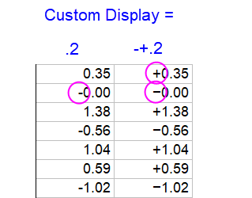
|
-+.2 displays +123.4560 |
Column Label Rows
Worksheet Column Label RowsColumn Label Rows, Worksheet
Column label rows store metadata -- data that is used to describe other data. Typically, this metadata may be brought in as header information in imported files, or it may be manually entered. Display of column label rows is optional and the user can selectively show them or hide them, as needed.
Column label row information is often used in plotting operations (e.g. worksheet Long Names used as graph legend text or Axis titles). The F(x)= row is used in performing math operations on columns of data (see below). Data stored in User-defined Parameter rows might be used in labeling or grouping of datasets in plotting, data manipulation, statistical analysis or math operations (see Tutorial 2, below).
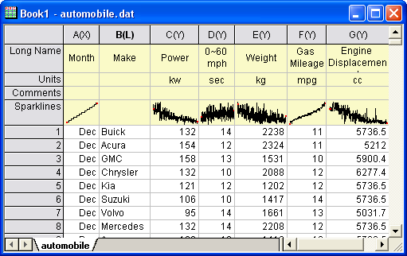
Tips...
- You can copy a selected subrange of worksheet cells and include associated column label row information with the copy-paste operation. To copy label rows with data cells, right click on your subrange selection and choose Copy (including label rows).
- You can highlight label row cells and stats will be reported to the Status Bar.
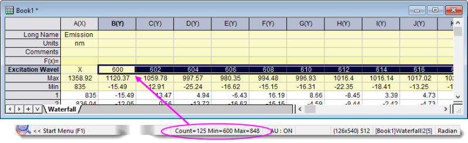
Managing Display of Column Label Rows
Display (showing or hiding) of column label rows is controlled by shortcut menu commands:
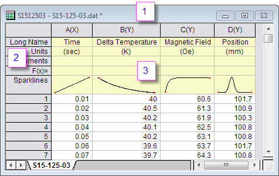
- Right-click here and choose View from the shortcut menu.
- Right-click here and choose Edit Column Label Rows or other label row command.
- Right-click here to control worksheet elements (display Row Label, Column Header, etc) or select a cell in this area, then right-click to Set Comments Style.
There is also a worksheet column label row Mini Toolbar for managing label rows. Use it to do such things as hide selected label rows, enable Rich Text or change label row order.
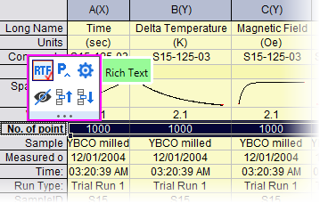
Column List View
Origin 2019 introduced a new view mode for the worksheet called Column List View that is a transposed view of the column label row metadata. This view is potentially useful if your worksheets have many rows of metadata and you want to focus on some particular aspect of that metadata. With the worksheet active, choose View: Column List View or press Ctrl + W.
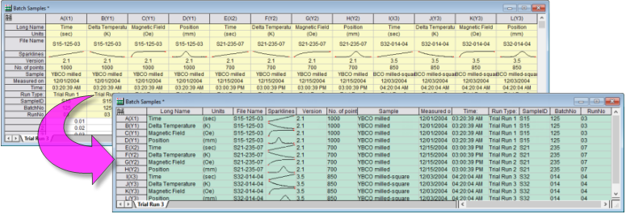
Further, you can apply a data filter to metadata in Column List View. When you return to the standard worksheet view (clear the mark beside View: Column List View), only data associated with the filtered metadata will show in the worksheet.
|
Column List View displays column index number ahead of column short name (+ column designation). In addition, you can hover on the left edge of column long name and a tooltip reports dataset size. To disable the display of column index, set @DSI=1.
-
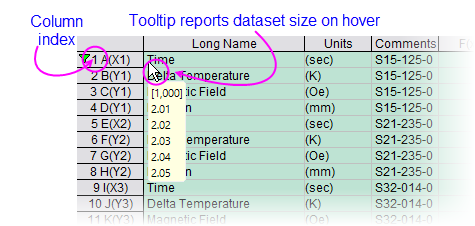
|
Sparklines
Numeric data stored in a column will graphically display in the column header in a special label row called Sparklines. A sparklineSparklines is, by default, a small inset line plot of the data in a column, plotted as the dependent variable (Y) against the row number or the associated X column as independent variable (X). When importing data, Origin displays sparklines by default when the number of columns is less than 50.
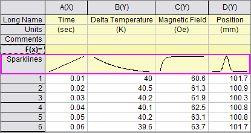
To Show or Hide Sparklines:
- Show Sparklines by clicking Column: Add or Update Sparklines. This opens the sparklines dialog.
- Show Sparklines for selected columns by clicking the Add Sparklines button on the Column toolbar.
- Right-click on the worksheet's Sparklines column label row and choose Add or Update Sparklines.
- Delete sparklines by right-clicking the Sparklines column label row and pressing the Delete key.
- In addition to the default line plot, Sparklines can display as Histogram or Box Charts. Highlight one or more columns by clicking on the column header, then choose Column: Add or Update Sparklines. In the dialog box that opens, set the Plot Type to Histogram or Box.
-
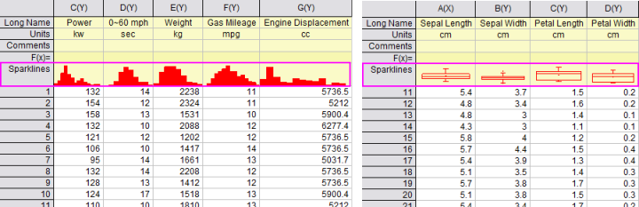
- Sparkline plot properties can be customized. Double-clicking on a sparkline pops open a graph window. Double-clicking on the pop-up window opens the Plot Details dialog box where you can customize the plot. When you close the pop-up window, your customizations are applied to sparkline.
 |
Sparklines can, in large numbers, cause Origin to act sluggishly. If your project is difficult to work with and you suspect sparklines may be contributing, you can prevent sparkline creation and hide existing sparklines in the project using system variable @SPK. Additionally, you can delete sparklines from the current project using delete -spk.
|
The Workbook Organizer
Workbook Organizer As mentioned, the workbook commonly stores metadata, some of which is visible in the column label rows. Other metadata may be hidden in the workbook. Such hidden metadata might include things like import file path and name, date and time of data import, file header information not written to the column label rows, variable names and values, etc. This hidden metadata can be viewed in the Workbook Organizer panel.
To show (or hide) a workbook's Organizer panel:
- Click the Show/Hide Organizer button on the workbook button bar.
- Right-click on the workbook title bar and select Show Organizer
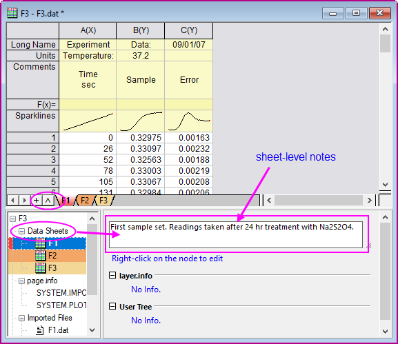
Managing Workbooks with Mini Toolbars
A number of common book-, sheet-, column and cell-level properties can be set or toggled ON/OFF with a Mini Toolbar button.
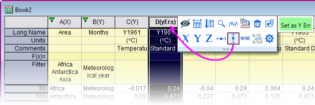
- To see which tools are available, make a worksheet selection and then hover on your selection.
- Page-level formatting options are shown by hovering in the upper-left corner of the sheet or near the window margins in the gray area to the right of the worksheet columns.
- Go here for a full list of worksheet Mini Toolbars.
Find and Replace in Worksheets
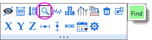
- Clicking Find opens a small dialog for searching the current worksheet selection.
- Small dialog supports string or numeric, forward and backwards search.
- While the dialog is minimized, you can edit within the selection or press CTRL + Page Up/Page Down to search backwards or forwards; or change the worksheet selection and restore the dialog to perform a new search.
- Click the ellipsis button (...) to open Origin's larger Find and Replace dialog.
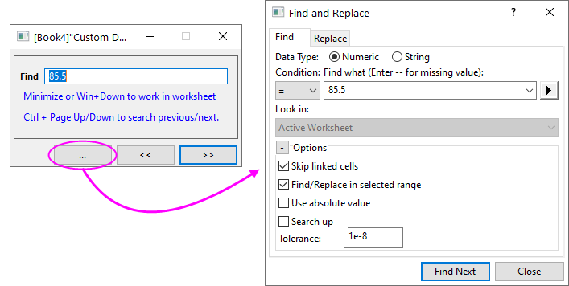
|
Origin has another "Replace" tool that can be scripted: wreplace. To open a UI dialog, open the Script Window (Window: Script Window) and type wreplace -d. To learn about scripting options, see the X-Function documentation for wreplace.
|
Simple Utilities for Filling Columns with Data
Datasets, Creating
Origin provides several utilities for filling a worksheet range or column, with data. The simplest of these use a menu command to fill a worksheet column with either row index numbers, uniform random numbers or normal random numbers. This is useful for generating quick datasets to test and try out other Origin features.
These simple procedures create a dataset in a pre-selected worksheet range or column(s):
| Action |
Toolbar Button |
Menu Command |
| Fill a range or column with row numbers |
 |
- Column:Fill Column With:Row Numbers
or
- Right-click and select Fill Range/Column(s) With Row Numbers
|
| Fill a column with uniformly distributed random numbers between 0 and 1 |
 |
- Column:Fill Column With:Uniform Random Numbers
or
- Right-click and select Fill Range/Column(s) With Uniform Random Numbers
|
| Fill a column with normally distributed random numbers |
|
- Column:Fill Column With:Normal Random Numbers
or
- Right-click and select Fill Range/Column(s) With Normal Random Numbers
|
| Fill a column with a patterned or random set of numbers |
-- |
- Right-click and select Fill Range/Column(s) With A set of Numbers...
|
| Fill a column with a patterned or random set of Date/Time Values |
-- |
- Right-click and select Fill Range/Column(s) With A set of Date/Time Values...
|
| Fill a column with arbitrary set of Text&Numeric values |
-- |
- Right-click and select Fill Range/Column(s) With Arbitrary set of Text&Numeric values...
|
The auto fill feature can be used in filling column label rows and the worksheet data cells:
To use auto fill to extend a pattern in the data across a range of cells (numeric data only):
- Select a contiguous block of cells and move the mouse cursor to the bottom right corner of the selection.
- When the cursor becomes a "+", hold down the ALT key and drag the mouse to the bottom or the right.
To use auto fill to repeat a pattern in the data across a range of cells (text or numeric data):
- Select a contiguous block of cells and move the cursor to the bottom right corner of the selection.
- When the cursor become a "+", hold down the CTRL key and drag the mouse toward the bottom or to the right.
|
Tips of data selection methods:
- When selecting a range of worksheet data, press Ctrl + click or Ctrl + drag, to deselect unwanted cells.
- Select a column and press Ctrl + Shift + RIGHT arrow to extend selection to the the last occupied column. Select a row and press Ctrl + Shift + DOWN arrow to extend selection to the last occupied row.
|
Datasets can also be generated quickly using LabTalk script. As an example:
- With a new worksheet active, open the Script Window from the Windows menu, and copy-paste the following lines of script code into that window:
-
col(1)={0:0.01:4*pi};
col(2)=sin(col(1));
- Highlight the two lines and press ENTER to execute them. The first two columns of the worksheet will be filled with data.
Setting Column Values
Column Values, Setting Set Column Values, Worksheet Worksheets, Set Column Values
The Set Values dialog box is used to set up a mathematical expression that creates or transforms one or more columns of worksheet data. The dialog box includes a menu bar, a control used to define output range, a tool for searching and inserting LabTalk functions into your expression, a column formula box used to define a one-line mathematical expressions, a Before Formula Scripts panel (usage optional) intended for data pre-processing and defining of variables used in your one-line expression and for Python users, a Python Function tab for defining and using Python functions which can also be used in your expressions.
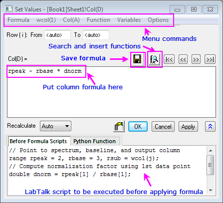
Since Origin 2017, the column formula box (the upper box) in Set Values has supported a simplified spreadsheet cell notation like is used in MS Excel and Google Sheets. A cell is addressed using column Short Name + row index number (e.g. the first cell in column A -- formerly represented as "col(A)[1]" -- is now simply "A1").
In new workbooks, spreadsheet cell notation is enabled by default. Spreadsheet cell notation can only be used in defining the column formula. It cannot be used in the Before Formula Scripts panel of Set Values, nor can it be used in your LabTalk scripts. Note that the "old" column and cell notation will work in spreadsheet mode, so if you are an experienced user and you prefer to use the old notation, you may enter it as you always have. For an introduction to the spreadsheet cell notation syntax as well as a contrast with the "old" methods, see Column Formula Examples.
To open the Set Values dialog box for a single column:
- Select a worksheet column or a range of cells in a worksheet column.
- From the menu, choose Column: Set Column Values... or right-click on the worksheet column and choose Set Column Values... from the shortcut menu.
To open the Set Values dialog box for multiple columns:
- Select multiple, contiguous worksheet columns (skip no columns) or the entire worksheet.
- From the menu, choose Column: Set Multiple Column Values... or right-click on the worksheet column and choose Set Multiple Column Values... from the shortcut menu.
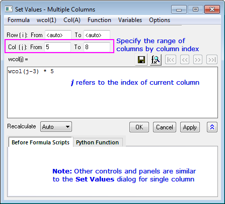
Set Values Menu Commands
| Menu Commands |
- Formula: Load a saved formula into the column formula box. Formulas are saved using Formula: Save or Formula: Save As....
- wcol(1): Use the menu to include worksheet columns in either your column formula or your Before Formula Scripts (column reference is inserted at the cursor). A Column Browser is available to help in selecting the correct columns. Columns are listed by column index.
- Col(A): Similar to wcol(1) menu functionality but columns are listed by column name (including Long Name, if it exists).
- Function: Add LabTalk functions to your expressions (function name is inserted at the cursor). Note that when you hover over a function in the menu list, the function description will be shown in the Status Bar. When a function is selected, its description will be displayed in a pop-up Smart Hint.
- Variables: Add a variable or a constant to Column Formula or Before Formula Scripts; Add range variables (including by selection) or file metadata, to Before Formula Scripts.
- Options: Allow direct editing of column formula in worksheet Formula row; add a comment about the column formula; or preserve text in Set Values columns (do not treat as text as missing values).
|
| Column Formula |
- Add a single line expression for generating data. Functions, conditional operators and variables can be used.
|
| Before Formula Scripts |
- LabTalk scripts to be executed before the expression in the column formula box is executed.
|
| Python Function |
|
|
Access to Origin's built-in functions:
- The Set Values dialog and the F(x)= cell get Auto Complete support. Begin typing to see a list of possible functions.
- Additionally, you can find and insert a function from the Functions menu in Set Values dialog. When you mouse over one of the functions in the sub-list of Function menu, a one-line tooltip is displayed in the Status Bar. If you select the function, a Smart Hint appears with a more detailed explanation and a link to the full function description, syntax, examples, etc.
- Additionally, you can click the Search and Insert Functions button
 to search for available functions by keyword and, once found, insert the function into your expression. Note that the Search Functions dialog can also be opened directly from menu Tools: Search Functions. to search for available functions by keyword and, once found, insert the function into your expression. Note that the Search Functions dialog can also be opened directly from menu Tools: Search Functions.
|
To learn more, see Set Column Values - Quick Start
The "F(x)=" Worksheet Column Label Row
For simple expressions, you can use the F(x)= row to set column values. Any expression you enter here is directly entered into the Set Values dialog and vice versa. Note that the simplified spreadsheet cell notation that works in the formula box in Set Values also works in F(x)=:
- Double-click in a cell in the F(x)= column label row.
- Enter an expression to enter output in the data column below.
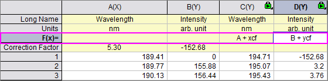
Ease of use to the F(x)= label row:
- The Auto Complete hint enables when you enter a formula in F(x)= cell and Set Values dialog. If you prefer not to use Auto Complete, you can disable it by setting system variable @FAC=0.
- Autofill is supported for column formulas entered in F(x)= cell. That is, the formula will auto-adjust to use a sequence of new input datasets when autofill. To use, hover at the lower right corner of the cell and when the cursor becomes a "+", press Ctrl and drag to the right with your mouse.
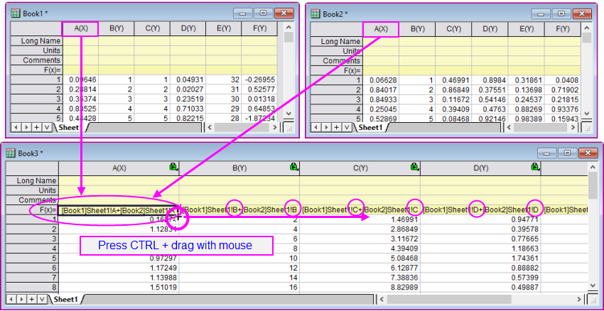
Set Column Values Tutorials
 |
Tutorial 1: A Quick Units Conversion using F(x)=
- Start with a new workbook and import the file \Samples\Graphing\WIND.DAT.
- We will assume that column B contains Speed values in miles per hour (MPH). Click on the column heading for column C, then right-click and choose Insert. Origin inserts a new column C and moves Power values to column D.
- Now, we'll convert the MPH values in column B to kilometers per hour (KPH). Double-click in the F(x)= cell of column C and enter
B*1.6
and press Enter. Column C is filled with values in units of KPH.
Tutorial 2 : Computing Moving Average and Moving Standard Deviation
- Import the file Samples\Signal Processing\fftfilter1.DAT.
- Add two more columns to the worksheet by clicking the twice.
- Click on the header of the 3rd column to select it, then right-click and select Set Column Values... from the context menu.
- In the Set Values dialog, enter the following in the upper panel:
movavg(B,5,5)
and press Apply. Column 3 is filled with an 11-point moving average of the data from column B (note that you can insert functions such as movavg from the Function menu of the Set Values dialog box).
- Click the >> button above the edit box to switch to the 4th column.
- In the edit box for the 4th column, enter the formula:
movrms(B,5,5)
and press OK. This 4th column will be filled with root-mean-square (RMS) values, using a window size of 11 at each point.
Tutorial 3: Set Values for Multiple Columns
- Create a new project by clicking the New Project button
 on the Standard toolbar. on the Standard toolbar.
- Click the Import Multiple ASCII button
 to import the files F1.dat and F2.dat in the <Origin Folder>\Samples\Import and Export\ path. In the impASC dialog, set Multi_File (except 1st) Import Mode to Start New Books and click OK. to import the files F1.dat and F2.dat in the <Origin Folder>\Samples\Import and Export\ path. In the impASC dialog, set Multi_File (except 1st) Import Mode to Start New Books and click OK.
- Two workbooks are created, named as F1 and F2. Click the New Workbook button
 on the Standard toolbar to create another workbook. on the Standard toolbar to create another workbook.
- With the 3rd workbook active, click the Add New Columns button to add a column. Highlight all columns and select Column: Set Multiple Columns Values from the main menu or right-click the columns and select Set Multiple Columns Values from the shortcut menu to open the Set Values dialog box.
- Expand the bottom panel by clicking the Show Scripts button
 . Enter this script in the Before Formula Scripts edit box, . Enter this script in the Before Formula Scripts edit box,
range r1=[F1]F1!wcol(j); //"j" is the column index.
range r2=[F2]F2!wcol(j);
- Enter (r1+r2)/2 in the Column Formula edit box
- Select Options: Direct Edit Formula Cell to clear this option.
- Select Options: Formula Text... and enter (F1+F2)/2 in the Formula Text dialog, then click OK.
- Click the OK button in the Set Values dialog box. You will see the results in the worksheet, and (F1+F2)/2 will display in the F(x)= column label row instead of the formula.
|
Setting Cell Values
Origin supports cell-level expressions similar to those used by spreadsheet programs. Cell-level expressions which return a single value (numeric, string or date/time) can be entered into any worksheet data cell or into cells in a User-Defined Parameter row of the column label row area. When Edit Mode (Edit: Edit Mode) is toggled on, cell formulas display. When Edit Mode is toggled off, the formula result is displayed. Cell content can be edited regardless of Edit Mode state.
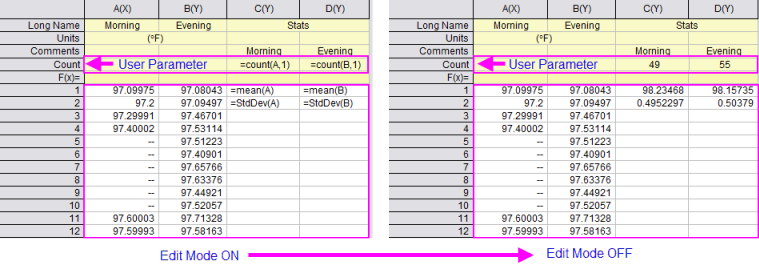
- To use cell formulas, Spreadsheet Cell Notation must be enabled (it is by default).
- Cell formulas begin with an equal sign (e.g. =B1 - C1).
- Cell formulas can return a numeric, a string or a date-time value.
- Cell formulas can incorporate cell references, variables, operators, LabTalk-supported functions and constants.
- Cell formulas can reference values in other sheets or books.
- Cell formulas can be extended to other cells by dragging with your mouse.
- The Auto Complete hint -- which shows as soon as you enter the first character beyond "=" -- applies to the Set Values dialog, the F(x)= label row and cell formulas.
- There is a periodic refresh performed on cell calculations. If the sheet contains large numbers of cell formulas, this can slow your work. System variable @SCNT is added to manage the recalculation time (default is 5000 millseconds) so if the continual recalculation is annoying, you can set a longer time period. Later, if you need to force a refresh, you can open the Script Window/Command Window and run @SCNT = -1.
To learn more, see Using a Formula to Set Cell Values.
The Formula Bar
When creating cell formulas, or column formulas using F(x)=, the Formula Bar makes it easier to find and insert functions, select cell ranges and view and edit expressions, particularly long expressions that exceed cell width.
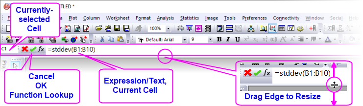
To enter an expression into a cell (data cell or F(x)=), click on the cell, then:
- Enter an "=" and type your expression; or click the
 button to open the Search and Insert Functions dialog.
button to open the Search and Insert Functions dialog.
- Search for the desired function then double-click on it to insert it into your Formula Bar expression.
- Interactively select your data range going to the worksheet and (a) clicking on a column heading or (b) dragging to select a range of cells.
- When your expression is complete, click the
 button or press Enter.
button or press Enter.
Set Cell Values Tutorials
|
Tutorial 1: Extending a cell formula to other cells
- Click the New Workbook button to open a new book.
- Click on the column A heading to select, then right-click and choose Fill Column with Row Numbers.
- Click on cell B1 and enter:
-
=A1+A$1
- Press ENTER. This adds the value in A1 to the value in A1.
- With the cell still selected, hover on the selection handle in the lower-right corner of the cell and when it looks like a "+", double-click to extend the cell formula to the bottom of the column.
- Click the Add New Columns button to add column C.
- Click on the Cell in C1 but this time enter (omitting the "$"):
-
=A1+A1
- Press ENTER. This adds the value in A1 to the value in A1.
- With the cell still selected,hover on the selection handle in the lower-right corner of the cell and when it looks like a "+", double-click to extend the cell formula to the bottom of the column. Note that this time, the resulting values are different.
- Click Edit: Edit Mode to display the underlying cell formulas. Note that the "$" in column B "locked" the second cell A1 reference so that it didn't change but that the A1 reference in column C changed with the row index number as we extended the cell calculation to other cells.
-
-
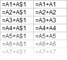
|
|
Tutorial 2: Quickly finding maximum values in multiple columns of data using special keyword "This"
The only place where you can use cell formulas in the worksheet column label rows (worksheet header rows), is in a User Parameter row.
- Create a new workbook and then choose Data: Import From File: Single ASCII and import the file \Samples\Import and Export\S15-125-03.dat.
- With your mouse, hover just to the left of the F(X)= row label and when the pointer becomes an arrow, right-click and Add User Parameters.
- In the dialog box that opens, enter "MaxValue" and click OK.
- In column A(X), in the MaxValue cell, enter:
-
=Max(This)
- Click outside the cell and cell should now display "10".
- Click back on this cell, then grab the selection handle in the lower right corner of the cell and drag to the right to extend the cell formula to MaxValue cells in columns B(Y), C(Y) and D(Y). All MaxValue cells should now display the maximum values in their respective columns.
|
|
Tutorial 3: Use a column label row value in a cell calculation
All data in the worksheet column label rows, including User Parameter rows, is stored as string data. To use a "number" stored in a column label row in a cell calculation, you must convert the string to a numeric value. In the following example, we use the LabTalk value() function to convert column label row data to a numeric so that it can be used in a cell calculation:
- Create a new workbook and then choose Data: Import From File: Single ASCII and import the file \Samples\Import and Export\S15-125-03.dat.
- With your mouse, hover just to the left of the F(X)= row label and when the pointer becomes an arrow, right-click and Add User Parameters.
- In the dialog box that opens, enter "Correction" and click OK.
- In column D, enter the value "0.2" into the Correction cell.
- Click the Add New Columns button to add column E.
- In cell E1, enter:
-
=D1+value(D[Correction]$)
- Press ENTER. This converts the Correction value to a numeric and adds the numeric to the value in cell D1. The cell should display 101.9.
NOTE: The "$" in the above expression does not function to create an absolute cell reference as in the first example above. In this context, the "$" syntax is used to express a string variable stored in a user-parameter cell, before converting that string to a numeric value.
|
Naming Data Ranges
You can assign a name to a worksheet data range or column label rows, and use the name in cell formulas or column formulas and to define Reference Lines in graphs.
To create a named range:
-
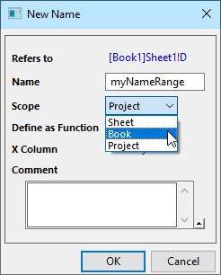
- Highlight a cell or a range of cells and choose Data: Define Name.
- In the New Name dialog box, enter a Name for the selected (Refers to) range.
- Assign a Scope to your named range.
- Optionally: if you wish to use the named range to return interpolated values, enable Define as Function and/or add a Comment.
To manage named ranges:
- With the worksheet active, choose Data: Name Manager.
- Use the dialog to modify name, scope, range and comments.
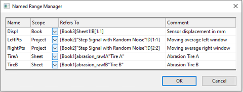
Remove Formula/Links
Removing formulas and links can make it easier to share project data with colleagues without having to share such things as externally-linked (DDE) Excel files. It is also useful for significantly reducing project size before archiving data.
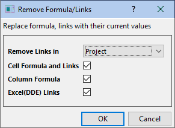
Things you can convert to raw numbers:
To open the tool:
- Click Edit: Remove Links...
for more information, see the Origin Help file.
Cell Notes
Any worksheet cell -- data row or column label row -- can contain a cell note; even those that contain data or other objects such as images or embedded graphs (Note: cells containing Links are not supported).
Worksheet cell Notes support Rich Text, meaning you can style text using Origin Rich Text syntax. In addition, you can add images and graphs, and link to worksheet cell values, report table values, etc. See Notes Windows for Reporting.
- To add notes, select the worksheet cell and click the Mini Toolbar Add Note button and enter your text.
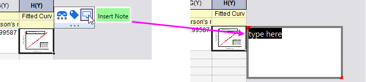
Note that Column List View also supports cell notes in the label row area.
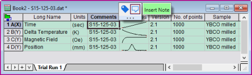
- While editing your cell note, use Format toolbar buttons to format your text.

- Note that a right-click inside the notes popup brings up a shortcut menu for inserting various Origin objects, for resizing the popup to fit added content and to Edit Raw Text in Notes Window.
- Alternately, you can select the cell, then click the Mini Toolbar Open in Notes Window button to open content in a Notes window. Rich Text is enabled by default.

- While editing in the Notes window, use Format toolbar buttons (a) to format your text. To see your note in "Render" mode (b), press CTRL + M (Notes: Render Mode). To insert the finished Note into the worksheet cell, click the Close button (c).
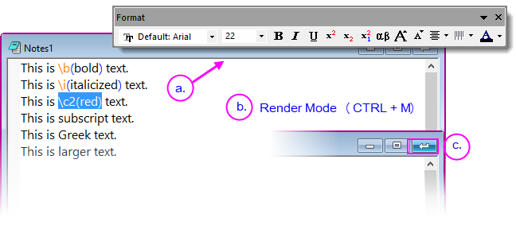
- The reinserted Note can be see by hovering on the worksheet cell.
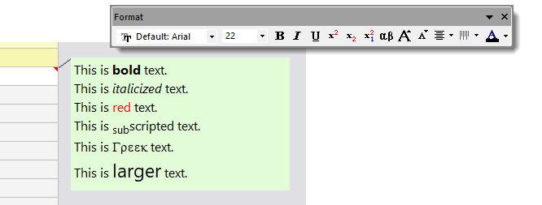
Notes:
- For text that is not assigned a paragraph style (see next section), you can use the Font Size control on the Format toolbar, to control text size. Font Size can be set for each window but all Notes windows must share a common Font (e.g. Segoe UI).
- Origin supports "substituting" cell Notes in graph legend and text objects using @WN (e.g. %(1, @WN, B, 3) for Note in col(B), 3rd cell of 1st plot's source worksheet).
- There is a system variable @CNF (default=12) for control of cell notes preview font (independent of font when opened in a Notes window).
|
Text Styles Manager
In addition to styling text with the Format toolbar, you can apply a simple set of styles to each line/paragraph. Manage styles with the Text Styles Manager dialog box.
- With a worksheet active, choose Tools: Text Styles Manager.
- Select a Style to Modify and Apply or Close.
-
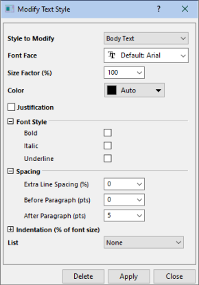
Note that you can add styles by selecting <new> from the Styles to Modify drop-down list; or select a style and Delete.
To apply a paragraph style to Notes window text:
- Open the cell note in a Notes window.
- With Render Mode off (CTRL + M, to toggle), click on a line of text then right-click, choose Paragraph Styles and choose a style from the popup menu.
- To check results, press CTRL + M (Render Mode).
Processing Worksheet Data
Origin provides a number of utilities for manipulating worksheet data. Most of these are found on the Worksheet menu while some are on the Edit, Column or Analysis menus (note that a worksheet must be active). Some utilities are available from a shortcut menu: select your data and right-click. Pivot Tables Worksheets, Sorting Data Sorting Worksheet Data Hiding Worksheet Columns Worksheets, Transposing Data Worksheets, Processing Data
Conditional Formatting of Worksheet Data
In addition to the above worksheet data utilities, the Origin worksheet supports Conditional Formatting. Conditional Formatting has three modes:
- Highlight mode opens a dialog box with controls to apply color to worksheet cells based on one or more conditions (e.g. "equal to", "not equal to", "text that contains", etc).
- Duplicates mode opens a dialog box with controls to apply to worksheet cells that contain duplicate values.
- Heat Map mode opens a dialog box with controls to apply a color map to cells based on worksheet values. The worksheet Heat Map is zoomable and scrollable, making it easy to get a "big picture" overview of data variation in three dimensions.

Manage conditional formatting in the active sheet using the Conditional Format Manager.
Protecting Worksheet Data
You can apply blanket protections to one or more worksheets and, in the process, provide for a few exceptions.
-
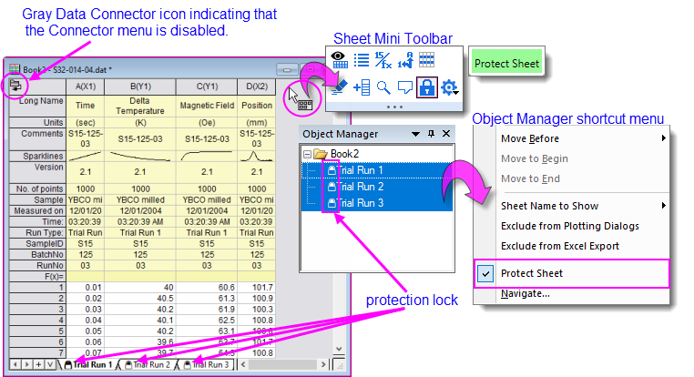
- Click the sheet-level Mini Toolbar Protect Sheet button.
- Press Ctrl/Shift + select on multiple worksheet tabs then right-click and Protect Sheet.
- Press Ctrl/Shift + select on multiple sheets in Object Manager then right-click and Protect Sheet.
Any of these actions produces a Protect Sheet Options dialog so that you can set some exceptions. This dialog is also available by clicking Preferences: Protect Sheet Options.
-
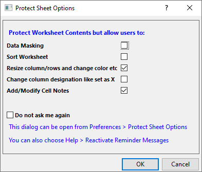
- To remove protections from one or more worksheets, select the worksheets and remove the check mark beside the Protect Sheet Mini Toolbar button; or from the Object Manager or sheet tab shortcut menus' Protect Sheet option.
Workbooks for Analysis and Reporting
Analysis Templates Templates, Analysis Graphs, Embed in Worksheets
Apart from text and numeric data, the workbook can contain various other types of information -- images, graphs, notes and matrices; links to cell values in other books, project variables, documents or web pages; plus, import file metadata, variables and scripts -- making the workbook a flexible medium for collecting research data or for creating custom reports.
Further, as we will see, the workbook can "store" a complex sequence of analysis operations -- for instance, the application of a data filter, plus a fitting operation on the filtered data, combined with a customized plot of the results -- into something that we call an Analysis Template. The Analysis Template makes it possible to automatically generate a custom report of results, simply by supplying new input data.
-
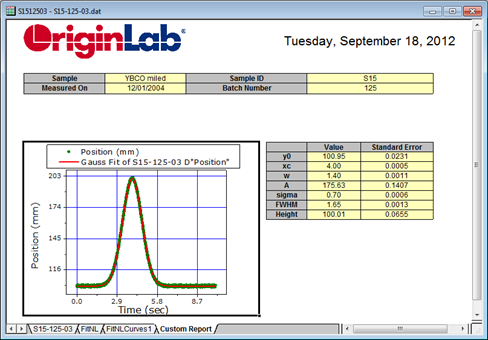
One attractive option for generating reports (there are others -- see the tip at the bottom of this section) is to export data to a custom MS Word template, and optionally, a PDF file. This is done by running an output-generating analysis in Origin, then associating key results with bookmarks in a Word template, and, finally, saving the workbook as an Analysis Template. To generate your report, you open the Batch Processing tool, point to both your Analysis Template and your Word template, run the batch process and generate your reports.
-
-
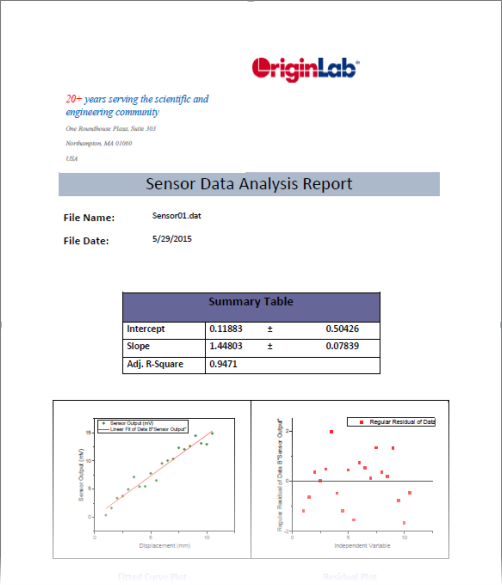
|
Another option for generating reports is to create HTML reports using Origin's Notes window. A Notes window can link to graphs, worksheet cells, etc., either directly or using a placeholder sheet. For more information, see HTML Reports from Notes Windows.
|
Topics for Further Reading